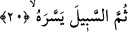

kadderahu” cümlesini başka bir cümle kabul etmiş ve bu cümlenin yaratmanın
nasıllığını ve Allah’ın nimetinden bunun nasıl tamamlandığını ifâde eden bir başlangıç
cümlesi olarak değerlendirmiştir.
Bu “nutfe” kelimesini sonrasıyla ilgili kabul eden âlimler ise bu kelime üzerinde vakf
yapmazlar.
Âyetteki “kadderahu” kelimesine “şekil verdi” anlamını verdik. Bunun izahı şöyle
yapılabilir: Allah ona organ ve şekil olarak en uygun olanı hazırladı. Bir başka ifâdeyle;
Allah onu organca, şekilce, sayı ve keyfiyetçe belli bir miktar üzerinden yoktan var etti.
İnsanı kendi maslahatına lâyık bir dereceye ulaşmaya hazır bir biçime ve kıvama soktu.
Âyette “yaratma” fiili iki kez geçmektedir. Bu fiillerin anlamına bakarak aynı şeylerin
birbirine atfedilmiş olduklarını söylemek mümkün değildir. Çünkü herhangi bir şeyi
yaratmak demek aynı zamanda onu takdir etmek ve gerek kemmiyet gerek keyfiyyet
açısından belli bir miktar üzerinden yoktan var etmek demektir.
Kelimeyle ilgili bir diğer açıklama şöyledir: Sonra onun organlarını, şekil ve
şemâilini anne karnında düzenleyip yarattı.
“Kadderahu” fiiline “ona şekil verdi” anlamından başka “yaratılış süreci
tamamlanıncaya kadar onu halden hale koydu” şeklinde mânâ vermek de mümkündür.
“Yaratma” fiilinden kaynaklanan “takdir”, durum anlamına gelen “tavr” kelimesinden
alınmadır. Bir başka ifâdeyle burada şöyle denmiş olmaktadır: Allah onu birinci takdir
ve planlama üzerine yoktan var etti. Sonra onu önce alaka sonra bir çiğnem et (mudğa)
olmak üzere yaratılışının son aşamasına kadar erkek veya kadın, şaki veya said
olacağına kadar halden hale ve durumdan duruma soktu.
Bazı âlimler her iki mânâ açısından da “fa” harfinin “tafsil” yâni ayrıntı bildirme fa’sı
olduğunu söylemişlerdir. Çünkü “takdir” her iki anlamı itibariyle böyle bir tafsili
içermektedir.
20. Sonra ona yolu kolaylaştırdı.
“Sonra ona yolu” yâni rahmin ağzını açmak sûretiyle ana karnından çıkışı
“kolaylaştırdı.” Çünkü doğumdan önce ana rahmi açık değildi. Allah ana rahminin
ağzını açtıktan sonra insanoğluna başı aşağıya, ayakları yukarıya gelmek üzere ana
karnında ters dönmeyi ilham etti. Eğer bu ters dönüş olmasaydı, annenin onu doğurması
mümkün olmayacaktı.
Âyete şöyle bir mânâ vermek de mümkündür: Allah insanoğluna dinde hayır ve şer
yolunu kolaylaştırdı. Bu iki yoldan dilediğine girme fırsatı verdi. Bu fırsat verme insana
güç verme ve ona kendisine faydalı ve zararlı olan şeyi bildirme, akıl bahşetme,
peygamberler gönderme, kitaplar indirme vb. yollarla olmuştur.